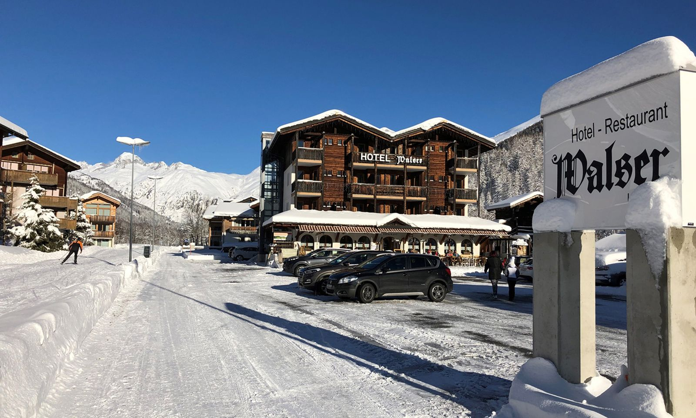
Ulrichen · Obergoms · Wallis
Die Loipe beginnt vor der Haustür
Familiengeführtes Hotel mit Restaurant im Obergoms – am Fuss der Pässe Nufenen, Grimsel und Furka.
- Langlaufloipe
- direkt am Haus
- Bahnhof Ulrichen
- ca. 5 Min. zu Fuss
- Zimmer
- 26, mit Lift ab Skiraum
- Doppelzimmer pro Nacht, mit Frühstück
- ab CHF 180
- 8,7/10Booking.com · 352 Bewertungen
- 9,4für das Hotelpersonal · Booking.com
- 9,3für die Lage · Booking.com
- 3 ×Blick Winter Award für das Goms: «Bestes Langlaufgebiet»
Noten: Stand 2. Oktober 2026
01Lage
Direkt an der Loipe
Im Winter liegt das Hotel Walser direkt an der Loipe – der perfekte Ausgangspunkt für Langlauftouren durchs Goms. Die Ski stehen im Skiraum im Keller, der Lift bringt Sie von dort bis zu den Zimmern in der dritten Etage.
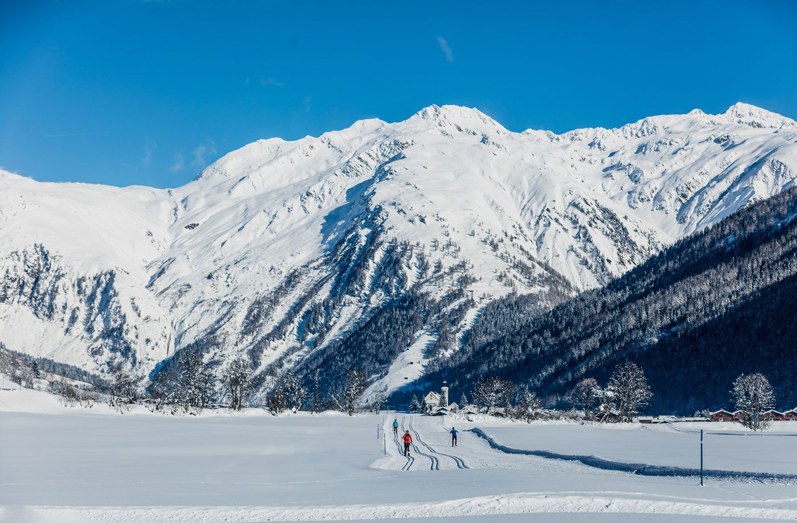
- Loipe
- direkt am Haus
- Loipennetz Goms
- über 90 km
- Nordisches Zentrum
- in Ulrichen
- Skiraum
- im Keller, mit Lift
- Blick Winter Award
- Goms: «Bestes Langlaufgebiet», dreimal in Folge
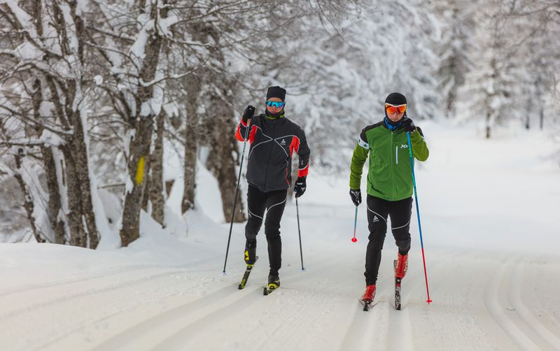
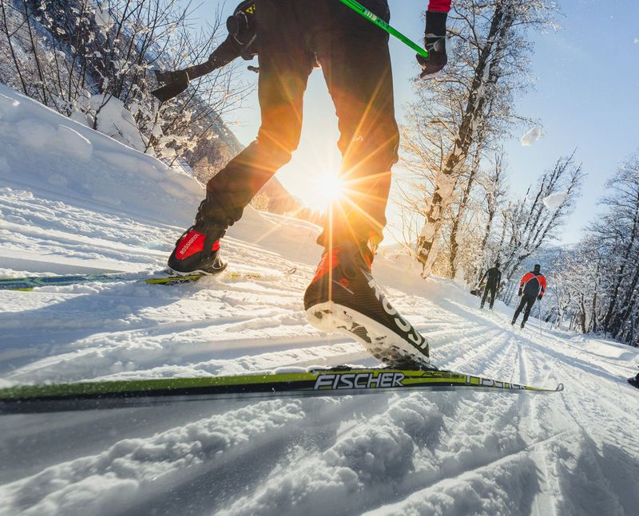
Auch ohne Langlaufski: Schneewandern und Schneeschuhlaufen beginnen ebenfalls im Dorf. Im Sommer führt statt der Loipe der Radweg am Haus vorbei.
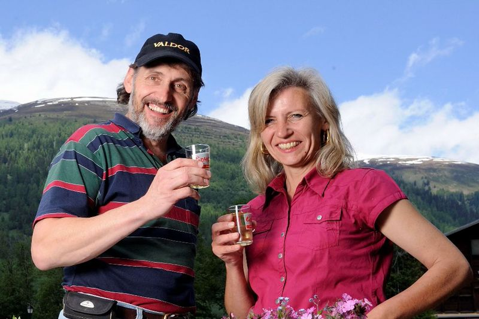
02Ihre Gastgeber
Alice & Andy
«Seit zehn Jahren dürfen wir das Hotel Walser mit Herzblut führen. Zehn Jahre voller wertvoller Begegnungen, gemeinsamer Momente, herzlicher Gespräche und unvergesslicher Augenblicke mit unseren Gästen.»
Alice Baldauf und Andy Imfeld
Als ehemalige Bio-Bauern wissen die beiden um den Wert der Natur im Goms: Das Wasser kommt aus den Quellen im Blaswald, geheizt wird mit Holzpellets und Sonnenwärme, das Hotelauto fährt elektrisch. Und mit etwas Glück singen und musizieren am Abend d’Chorbini – Andy ist seit über 30 Jahren dabei.
03Zimmer & Preise
26 Zimmer mit Blick auf die Gommer Bergwelt
Preise pro Zimmer und Nacht, inklusive Frühstück. Alle Zimmer sind ländlich und mit viel Holz eingerichtet – mit Dusche/WC, Föhn, Satelliten-TV, DAB+-Radio, WLAN und Telefon.
- Kurtaxe CHF 3 pro Person und Nacht, separat verrechnet
- 3-Gang-Halbpension CHF 35 pro Person und Tag
- Richtpreise – je nach Wochentag und Anlass können sie abweichen
Blick in die Zimmer
04Winter & Sommer
Zwei Jahreszeiten, ein Ausgangspunkt
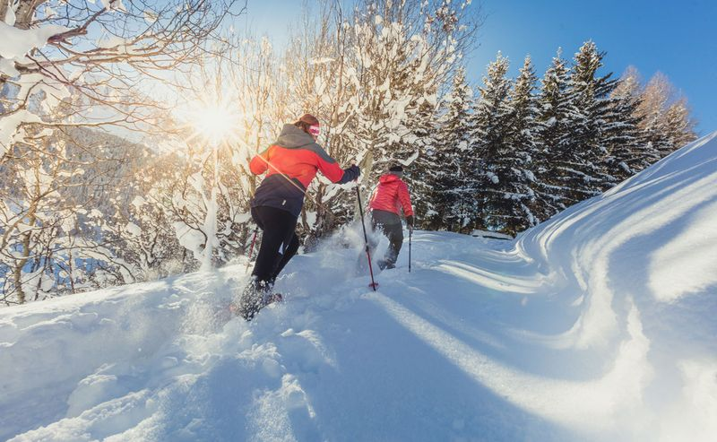
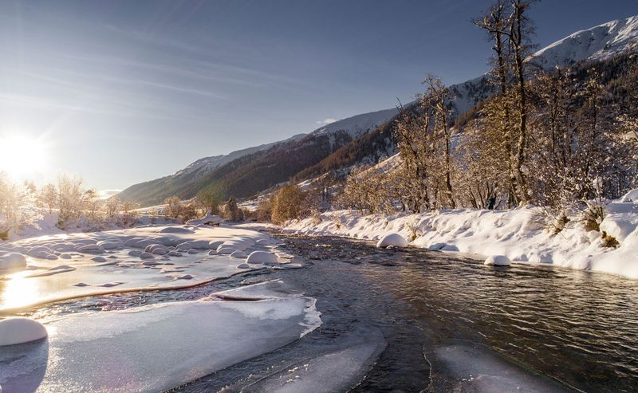
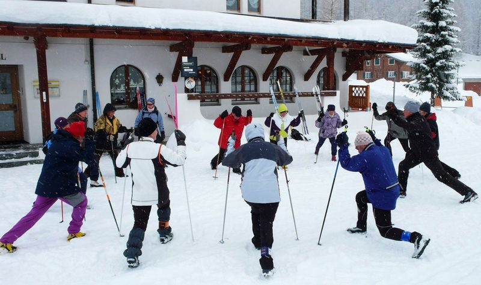
In der Bergwelt des Obergoms mit ihren verschneiten Waldlandschaften finden Sie Erholung pur. Das Hotel liegt direkt an der Loipe.
- LanglaufEinstieg in die Loipe direkt am Haus
- Schneeschuhlaufendurch verschneite Waldlandschaften
- SchneewandernErholung in der Bergwelt des Obergoms
- Ski & Snowboardim Goms
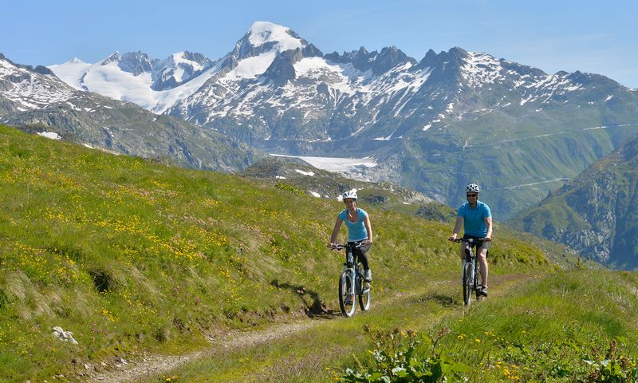
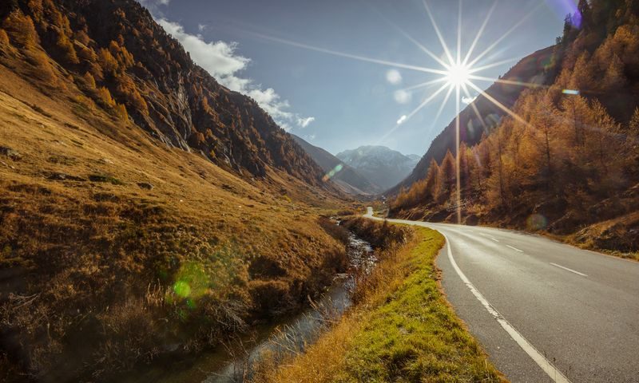
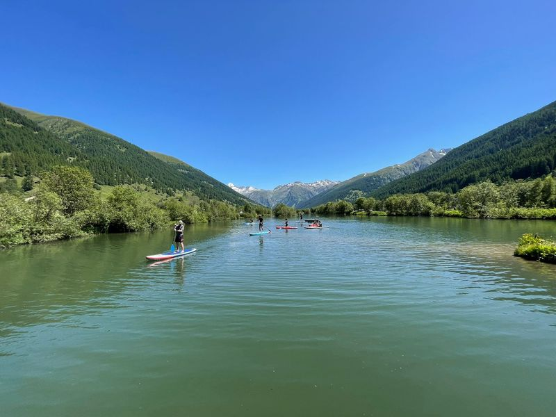
Im Sommer bietet das Obergoms endlose Wanderwege, Bike-Trails und eine nahezu unberührte Natur. Das Hotel liegt am Radweg und am Fuss von drei Alpenpässen.
- Nufenen, Grimsel, Furkadrei Alpenpässe ab Ulrichen – ideal für einen Zwischenstopp mit Übernachtung
- WandernWanderwege, Bergseen und Bäche
- Biken & VeloBike-Trails im Tal, der Radweg führt am Haus vorbei
- Stand-up-Paddlingauf dem Geschinersee bei Gommer Sport – rund 30 Geh- oder 4 Fahrminuten
05Restaurant
Frisch, regional, aus dem Goms
Einheimische und nationale Gerichte aus frischen Produkten der Region – nach Möglichkeit aus dem eigenen Landwirtschaftsbetrieb. Restaurant und Speisesaal bieten zusammen bis zu 100 Personen Platz, die Gartenterrasse 80.
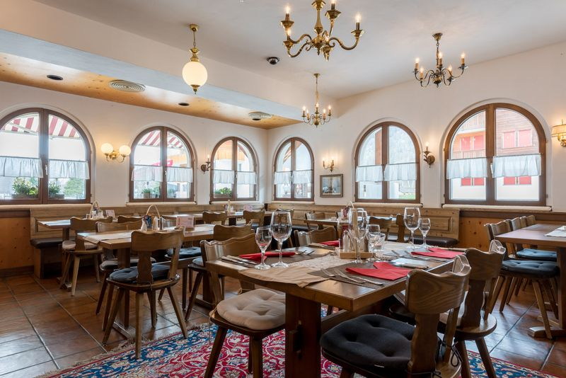
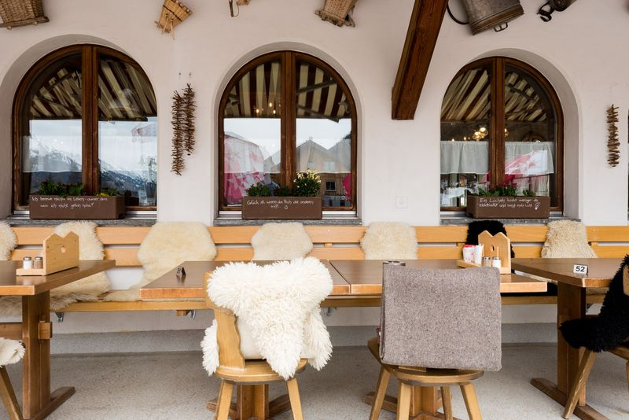
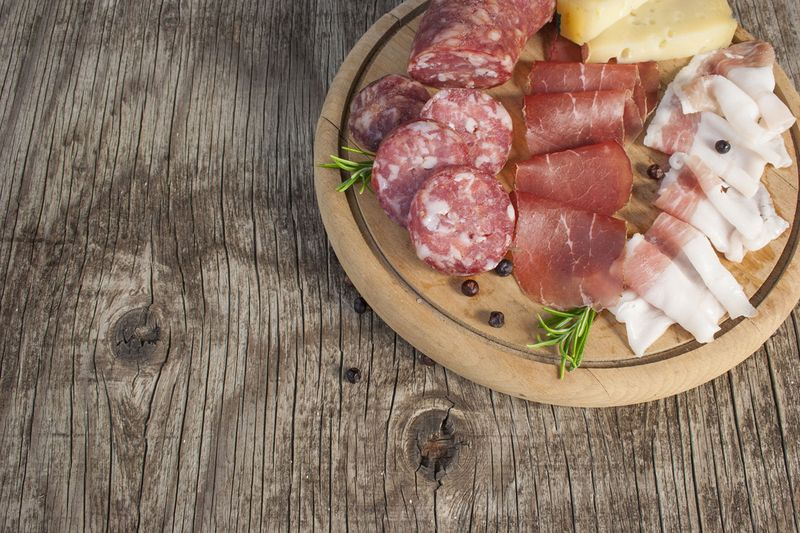
Aus der Abendkarte
- Walliser Plättli mit Trockenfleisch und Hobelkäse27
- Walliser Käseschnitte mit Tomaten, Schinken und Spiegelei25
- Käsefondue, Portion (ab 2 Personen)24
- Gommer Cordon bleu mit Pommes frites und Gemüse35
- Alpschweinschnitzel an Steinpilzsauce, Nudeln und Gemüse31
- Spareribs vom Alpschwein mit Reis29
Auszug aus der Abendkarte Sommer 2026, Preise in CHF.
- Käse
- Bio-Bergkäserei, Gluringen
- Brot
- Bäckerei Simeon, Reckingen
- Fleisch
- Metzgerei Nessier, Münster
- Kaffee
- Kaffeerösterei Sempione
- Halbpension
- 3 Gänge, CHF 35 pro Person und Tag
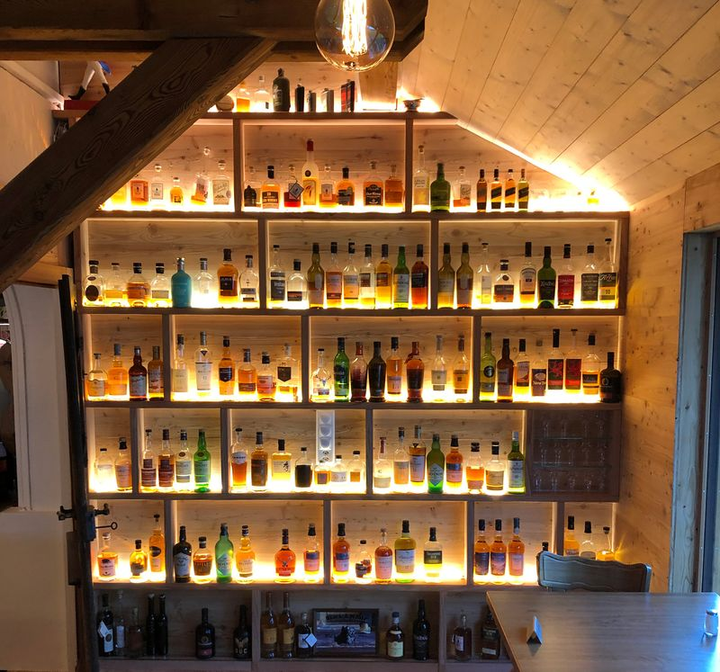
Whisky-Bar
Über 100 Whiskys – und bald ein eigener
Die grösste Whisky-Auswahl im Goms: über 100 verschiedene Flaschen, der Schwerpunkt liegt beim schottischen Single Malt – dazu Whiskys aus Irland, Japan und der Schweiz.
Der eigene Whisky reift noch im Fass: 2027 kommt er als erster Gommer Whisky zehnjährig auf den Markt. Die zweite Edition, ein Roggen-Whisky, lagert seit Juni 2024.
- 100+Flaschen an der Bar
- 2027erster Gommer Whisky, 10-jährig
06Das Haus
Das gibt es nur im Walser
-
Traktor-Apéro
Auf dem Planwagen, gezogen von einem nostalgischen Traktor, geht es durch Ulrichen – mit Walliser Wein und lokalen Spezialitäten.
-
Galerie «Zum Stägähüs»
Das Treppenhaus gehört einheimischen Künstlerinnen und Künstlern. Aktuell: Bilder von Ruth Zeiter aus Bister.
-
Walser Stübli
Ein urchiger Raum wie aus vergangenen Zeiten – für ein spannendes Buch oder einen ruhigen Abend nach der Loipe.
-
Kostenlose E-Tankstelle
Wer im Haus übernachtet, lädt sein Elektroauto gratis.
-
d’Chorbini
Seit über 30 Jahren machen die vier zusammen Musik – hier im Walser hat alles begonnen.
-
Hunde willkommen
Haustiere sind im Hotel Walser willkommen. Die Details besprechen Sie am besten direkt mit uns.
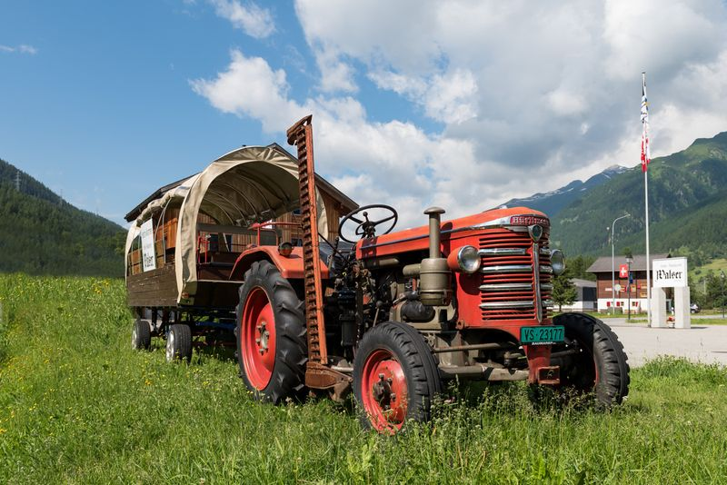
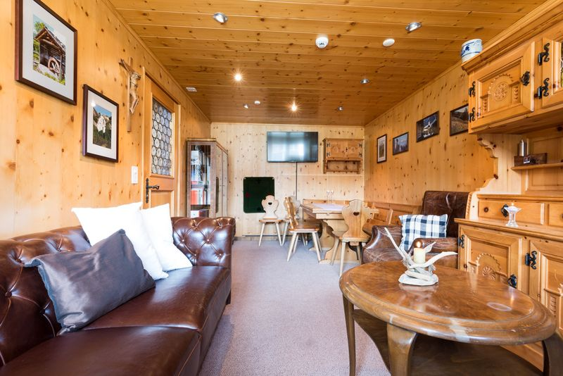
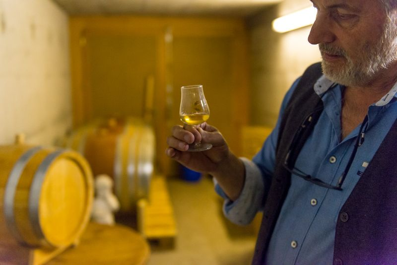
07Gästestimmen
Was unsere Gäste sagen
8,7
von 10 · 352 Bewertungen auf Booking.com
- Hotelpersonal
- 9,4
- Lage
- 9,3
- Sauberkeit
- 9,1
- Komfort
- 9,0
Stand: 2. Oktober 2026
«Super Lage an der Loipe, sehr ruhig in der Nacht. Sehr aufmerksames und freundliches Personal, schönes Frühstücksbuffet. Gemütliche Atmosphäre.»
«Sehr persönlich. Hier ist der Gast noch König. Täglich ein nettes Wort durch das Gastgeber-Paar. Sehr freundliches und nettes Personal.»
«Alle waren sehr freundlich und unkompliziert. Beim Frühstück gab es regionale und selbst hergestellte Produkte.»
Alle 352 Bewertungen auf Booking.com lesen Zitate abgerufen am 2. Oktober 2026
08Anreise
Mit der Bahn bis fast vor die Tür
Nufenenstrasse 31 · 3988 Ulrichen
- Mit der Bahn
- Mit der Matterhorn Gotthard Bahn bis Ulrichen: aus der Westschweiz über Visp oder Brig, aus der Ost- und Zentralschweiz über Göschenen oder Chur. Vom Bahnhof sind es rund fünf Minuten zu Fuss auf der Nufenenstrasse Richtung Nufenenpass.
- Mit dem Auto
- Ulrichen liegt am Fuss der Alpenpässe Nufenen, Grimsel und Furka. Am Haus gibt es einen grossen Parkplatz; Übernachtungsgäste laden ihr Elektroauto kostenlos.
Direkt beim Haus buchen
Wann dürfen wir Sie begrüssen?
Den besten Preis für einen Aufenthalt in unserem Haus erhalten Sie direkt bei uns.
Oder rufen Sie uns an: +41 27 973 21 22